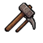
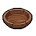
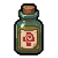

ALDEA LUNAVERDE · EXPEDICIÓN DE COSECHA
Cosecha de Lunaverde
La cosecha es limitada. Distribuye las cestas entre los habitantes y recorre las cuatro escenas de la aldea.
01 Arrastra una cesta hasta un habitante.
02 Puedes entregar varias cestas a la misma persona.
03 Antes de terminar, pulsa una cesta entregada para devolverla.
¿QUÉ SIGNIFICAN LOS ICONOS?

Trabajo y contribución
Hambre y necesidad
Salud y recuperación Responsabilidades familiares Circunstancia personal Situación especialLas decisiones se registran para una exploración académica. No hay respuestas correctas o incorrectas.